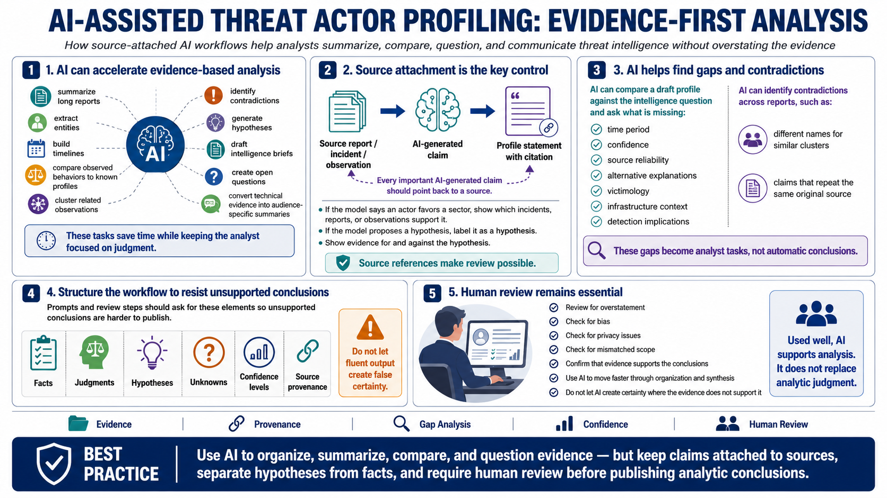

AI Workflows for Analysis and Synthesis
Connecting to LMS... Progress: in progress

Narration
AI can accelerate analysis when the workflow is designed around evidence. It can summarize long reports, extract entities, build timelines, compare observed behaviors to known profiles, cluster related observations, identify contradictions, generate hypotheses, draft intelligence briefs, create open questions, and convert technical evidence into audience-specific summaries. These tasks can save time while keeping the analyst focused on judgment.
The key control is source attachment. Every AI-generated claim that matters should point back to a source. If the model says an actor favors a sector, the profile should show which incidents, reports, or observations support that statement. If the model proposes a hypothesis, it should label the statement as a hypothesis and list evidence for and against it. Source references make review possible.
AI is also useful for finding gaps. It can compare a draft profile against the intelligence question and ask what is missing: time period, confidence, source reliability, alternative explanations, victimology, infrastructure context, or detection implications. It can identify contradictions across reports, such as different names for similar clusters or claims that appear to repeat the same original source. Those gaps become analyst tasks, not automatic conclusions.
The workflow should make unsupported conclusions harder to publish. Prompts and review steps should ask for facts, judgments, hypotheses, unknowns, confidence levels, and source provenance. Analysts should review the final product for overstatement, bias, privacy issues, and mismatched scope. Used well, AI helps analysts move faster through organization and synthesis. It should not create certainty where the evidence does not support it.